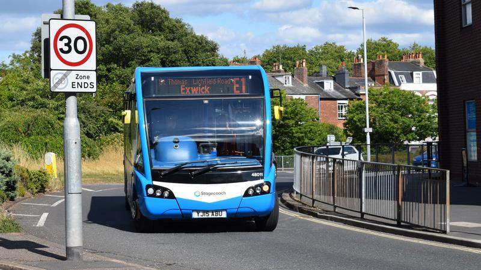
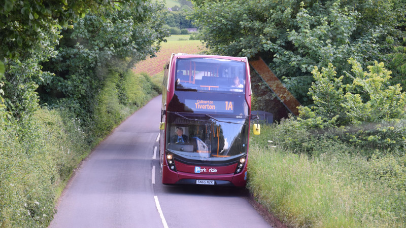
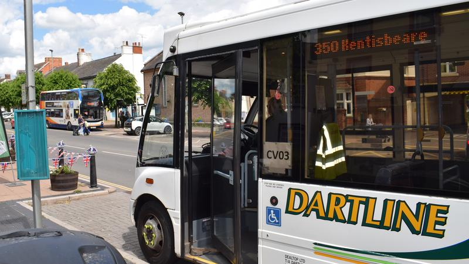
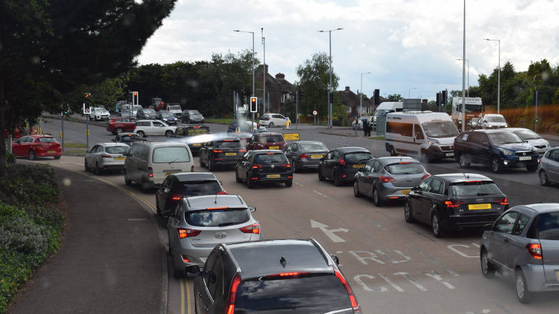
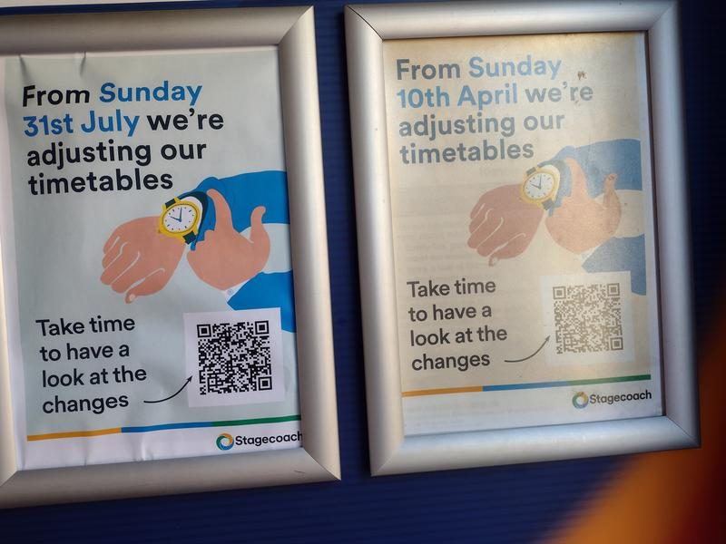
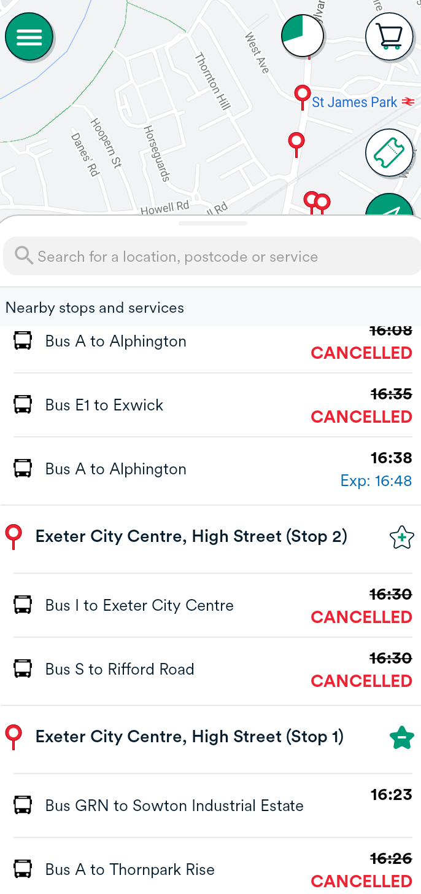
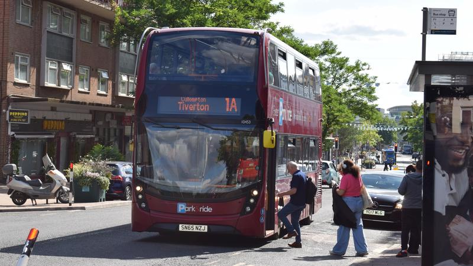
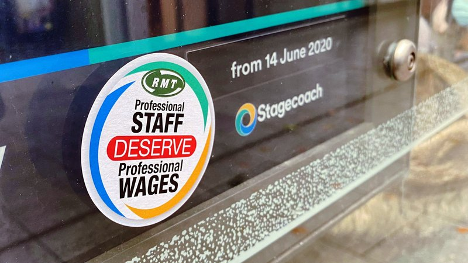

It would be difficult to find any regular Exeter bus user who would disagree that “the bus service in Exeter and its travel to work area is currently not fit for purpose”.
This stark statement was made by Exeter Labour councillors at a special meeting of Devon County Council’s Exeter Highways and Traffic Orders Committee (HaTOC) held in April in response to the state of the city’s bus services.
They said the issue was coming up frequently on the doorstep during canvassing for the May local elections, and called for bus franchising powers to be included in any future county devolution deal and for better marketing of services to improve patronage.
Mike Watson, the managing director of Stagecoach South West, Exeter’s principal bus services provider, told the committee that he greatly regretted where things stood.
Councillor Rob Hannaford, then leader of the Labour group on the county council, concluded a litany of shortcomings by paraphrasing Edward VIII’s reaction when confronted by poverty and hardship in the Welsh valleys in the 1930s, saying: “Something must be done”.
As nothing very much was actually done by the abdicating king or anyone else until a Labour government was elected nine years later, his choice of words may have been unintentionally apt.
The county council cabinet noted the committee’s resolution at its May meeting and requested a full officer report on the issue.
The report, published earlier this month, does not give grounds for optimism. The evidence suggests that a step change in improving bus services will stay in the “too difficult” tray for the foreseeable future.
The plans
In March 2021 the government published a new national bus strategy: Bus Back Better. Prime Minister Boris Johnson said, in the foreword: “As we build back from the pandemic, better buses will be one of our major acts of levelling-up”.
He added: “Last year, we announced £3 billion of new funding to level up buses across England towards London standards. This strategy describes how we will use that money.
“Just as we already have in the capital, we want main road services in cities and towns to run so often that you don’t need a timetable.”
The strategy says its central aim is “to get more people travelling by bus” which it says it will achieve only “if we can make buses a practical and attractive alternative to the car for more people”.
It says it will “make buses more frequent, more reliable, easier to understand and use, better co-ordinated and cheaper: in other words, more like London’s, where these type of improvements dramatically increased passenger numbers, reduced congestion, carbon and pollution, helped the disadvantaged and got motorists out of their cars.”
It also says: “We want services that keep running into the evenings and at weekends.”
 Stagecoach Exwick service – one Exeter route that still runs in the evening and at weekends, but won’t run at night from 31 July
However even £3 billion is not enough to achieve this step change right across the country.
Hence the requirement that all local transport authorities submit bus service improvement plans to set out how each would deliver improvements in line with the requirements of the national strategy, for the government to decide which plans to fund and by how much.
Devon County Council, Exeter’s local transport authority, published its bus services improvement plan last October. Its main proposals are:
- Improvements to frequency of weekday rural services and of inter-urban services (including evenings and Sundays) as well as hourly night buses on key routes
- Exploring the use of Demand-Responsive Transport (DRT)
- Bus priority measures in traffic management
- Better information for passengers
- Reduced fares through new types of zonal tickets
- Uniform “Devon Bus” branding
- Targets for zero-emission buses
- A passengers’ charter.
Its overall aim is to drive up bus service usage, though none of its proposals is particularly radical. Its ideas about DRT look behind the times beside, for example, Essex County Council’s successful bid to the government’s Rural Mobility Fund for a Digital DRT scheme trial.
 Stagecoach Tiverton/Cullompton/Exeter service – rural bus services are also important
The county council estimated the annual cost of delivering its bus services improvement plan would be £33.6 million.
The government published its response to local transport authority plans in April in a press release which opened with a misleading headline: “Cheaper and better buses in £7 billion package to level up transport outside London”.
In fact most of the £7 billion is going to other local transport schemes, including £5.7 billion to City Region Sustainable Transport Settlements.
A total of just £1.08 billion was allocated to bus services improvement plans, far less than the £3 billion originally promised.
Of the 79 authorities that submitted bids only 31 received any funding at all. Devon County Council received £14.1 million for a three-year period, £86.7 million less than it asked for.
It received less than half of the average £35 million allocation, putting it in 21st place among the authorities that did receive funding, and it was fourth from the bottom of the per capita list, receiving £17 per head against an average of £60.
Councillor Andrea Davis, the county council cabinet member for climate change, environment and transport, expressed strong disappointment at the decision and said the funding gap was so large that the Devon bus services improvement plan could not be delivered.
The county council has since submitted a revised proposal on which it intends to consult in October, when it will also update its plan.
The reality
The County Councils Network published an analysis of the situation in April which identified a “perfect storm” of factors impacting on the recovery of bus services across the country.
Fuel price increases have put operators “on the edge of affordability to carry out any bus services, let alone those that were already marginal”, the minimum wage for staff increased in April and pandemic-related government financial support ends in October.
Passenger numbers also remain low, having still not recovered to pre-pandemic levels, with some rural areas at less than half their previous rates.
There are driver shortages across the country and “concern that this will continue to be an issue given the recent campaign of recruitment for HGV drivers”, which may be a more attractive employment option because it does not involve dealing with passengers.
Meanwhile delays at DVLA mean it currently takes fifteen weeks to recruit and train a bus driver.
Greenslades Exeter G service – Stagecoach is not the only player
In addition, Stagecoach South West is struggling with acute local difficulties that particularly affect Exeter.
Mike Watson said in April that the company had reduced its driver shortage from 100 to 55, but all those vacancies were in Exeter, which he blamed partly on high housing costs in the city.
The company has reduced the number of evening and weekend shifts, as they are generally unpopular with drivers, but this reduces services, which is unpopular with passengers.
There is also considerable anecdotal evidence of the company having industrial relations problems, which apparently include an excessively disciplinary approach to drivers following passenger complaints.
When Councillor Marina Asvachin suggested this was an issue at April’s special HaTOC meeting, Stagecoach South West Managing Director Mike Watson did not respond.
There are also issues with Exeter’s route network, which has not kept up with changing needs and opportunities. Mike Watson told us that he saw the need for changes, but that the county council was not supportive.
This is borne out by the absence of references to network changes in the Devon bus services improvement plan, although officers told this month’s county council cabinet meeting that they would review the network over the next six months.
 Dartline Cullompton service – Devon’s bus network needs to cover dozens of smaller towns and villages
The overall message from Stagecoach is: we know there are problems, we have plans to solve them and we are working hard to deliver them. Meanwhile, please bear with us.
The detail underlying that message does tend to get overlooked, however, when service delivery often fails passengers and customer relations make things worse.
One frustrated Exeter resident recently tweeted: “One bus an hour. On a key city route. At peak commuter time on a Friday. When there used to be a bus every twelve minutes. You are totally failing passengers.”
Stagecoach responded: “Like the rest of the UK we’re short staffed at the moment. We’re working hard to get this sorted and return to normal as soon as possible. As a result we are unable to operate some of the buses across our network. Thanks.”
What about a bit of serious explanation instead of this tired old saw that has been in use for at least a year now?
The implications
The state of bus services is only one aspect of a bigger crisis in local transport and mobility which will remain with us even after Exeter bus services have been restored to an acceptable level.
Getting people out of private cars is a key carbon emissions reduction policy. Cars are not only a carbon problem: recent research shows that tyre wear produces much higher levels of particle pollution than exhaust emissions.
And there are numerous other problems with simply switching to electric vehicles, not least that we cannot currently access sufficient power to charge them.
Devon County Council finalised its 2020-30 Exeter Transport Strategy in November 2020, after the pandemic had begun but before its longer-term impact on travel patterns had become clear.
The strategy has a target that half of trips within the city should be made on foot or by bike, which is hardly more than when the strategy was written, but fails to specify what the modal distribution of the other half should be: bus, train or private car?
 View from a bus stuck in Exeter traffic at a busy junction without priority lanes
Nor does the strategy have anything innovative to say about inbound travel from outside the city, particularly for the 90% of rural residents who access Exeter by car.
More Park & Ride sites are suggested, despite their many downsides including the fact that without bus priority measures Park & Ride buses are still caught in city traffic.
The strategy also contains passing references to rail and the “Devon Metro” scheme, but these are vague.
It presents “integrated transport” as a good thing but proposes no specific changes apart from multi-modal ticketing, for which the rail companies show no enthusiasm according to Mike Watson.
In this respect the Devon bus services improvement plan may be a distraction, focussing as it does on one transport mode. The section on better integration with rail services is about little more than better signage at stations and improved websites and waiting facilities.
It does at least record some improvements in bus connections with trains arriving late at night from London.
 Stagecoach has changed its timetables twice in four months – April and July 2022
Meanwhile there is broad consensus, identified in the House of Commons Transport Committee report on bus services outside London, that convenience and frequency are major factors in decisions about what form of transport people will take.
The Devon bus services improvement plan went some way to confronting these issues, and the county council sees restoring confidence in bus services as key to increasing their use. Yet its ability to achieve this is in question.
Stagecoach has withdrawn, or has announced it will withdraw, from several bus services operated under contract to the county council, which has been unable to find other operators to take them on. These include Exeter’s night buses.
Despite amended timetables from April, unreliable service delivery has continued into July. The daily list of cancellations on the Stagecoach website is substantial.
The Stagecoach app, promoted by the company as the way to find out where your bus is, failed on the Thursday and Friday of the Jubilee holiday weekend. The company has not responded to a request for an explanation.
The county council said that it would use some of the government bus services improvement funding to develop a county-wide app covering all bus services without the flaws in the Stagecoach product, but it is not clear when this be ready for use.
 Stagecoach app showing Exeter bus service delays and cancellations
At the same time the county council, as highway authority, has done remarkably little to introduce new bus priority measures in Exeter that are needed to improve services.
For example, traffic light settings take no apparent account of bus movement, some bus priority lanes are mornings only and there have been no proposals to revise Exeter traffic flows for many years.
In addition, the increased use of cards and smartphones for fare payment has improved punctuality but requiring passengers without passes or cards to purchase tickets before boarding, either from pavement machines, local shops or online would improve it further.
The Devon bus services improvement plan does promise to address this situation, and £8.8 million of the £14.1 million funding the county council received must be used for improving bus priority measures.
Whether the members of Exeter HaTOC will consider the county council’s response to the situation fit for purpose remains to be seen.
The future
As things stand weary passengers still wait daily for over an hour for their buses and relations between Stagecoach and the county council have taken a turn for the worse.
At this month’s county council cabinet meeting Andrea Davis complained that the county council was being forced to respond to complaints about bus services because Stagecoach was failing to do so.
She also said that it had issues with Stagecoach (which she did not specify) that it did not have with any other bus operator, and that the situation was getting worse with no end in sight.
It has also emerged that, after writing to the regional traffic commissioner to complain about the company, an inquiry was held into Stagecoach South West’s competence and performance at the end of last month. The commissioner’s report is pending.
 Stagecoach Tiverton - Cullompton - Exeter service collecting passengers in Sidwell Street
We asked Mike Watson to comment. He said: “We have worked closely with Devon County Council and kept them informed every step of the way through our current staffing issues.
“We have shared with them our plans for recovery and whilst I am disappointed that they have written their letter, I completely understand their position and their need to do so.
“We remain focused on our recovery plans and you will see a marked improvement in our service performance over August as we envisage lost mileage to be largely eradicated over the summer.
“We have also put in plans to make sure this is sustained by giving our staff a 10% pay increase to reduce staff leaving and encourage more new people to join us.
“We fully expect our plans to yield good results and I can now see the light at the end of the tunnel.”
 Campaign sticker on Exeter bus shelter during 2021 Stagecoach strike over pay and working conditions
Further service cuts, which will hardly encourage more people onto buses, are nevertheless expected later this year.
Even Mike Watson’s optimism that services will improve must be tempered against his baseline measure: the currently reduced timetables which will be further reduced next week.
Waiting even 30 minutes for an urban bus is too long for it to become the preferred means of transport.
We do not have services which “run so often that you don’t need a timetable” in Exeter, although we no longer have printed timetables. Stagecoach has stopped printing them and the county council’s timetable booklets only cover the district council areas outside the city.
As ever, the root problem is money. According to its latest annual report Stagecoach South West’s pre-tax profits for 2020-21 were £1.95 million compared to £1.06 million in 2019-20, despite a pandemic-related fall in its 2020-21 revenue by one-third from the previous year.
This was achieved by reducing non-mileage related costs. The higher cost pressures this year will leave Stagecoach little room for manoeuvre.
Devon County Council is also cash-strapped. The county treasurer has warned of a 2022-23 overspend exceeding £40 million.
And central government is unlikely to make funding available on the scale required: both contenders to be the next prime minister favour cuts over spending.
Like Welsh miners in the 1930’s, it seems Exeter HaTOC will have to wait for the election of a Labour government to begin delivering the public transport system Exeter needs.